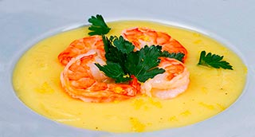

Cremoso de patatas Monalisa langostinos salteados con ajo tierno y un toque de guindilla
Patatas, Langostinos, Ajo tierno

| Patatas Monalisa | 600 gr. |
| Yema de huevo | 1 un. |
| Huevo entero | 1 un. |
| Aceite de oliva | 50 ml. |
| Aceite de girasol | 150 ml. |
| Ajos | 2 dt |
| Sal | 5 gr. |
 |
|
| Langostinos | 400 gr. |
| Ajos tiernos | 4 un. |
| Guindilla | 1 un. |
| Aceite de oliva | 20 ml. |
| Sal | 2 gr. |
-
Cremoso de Patatas
- Pelar un diente de ajo, cortarlo en láminas y colocarlo en el vaso del triturador.
- Añadir la yema de huevo, el huevo entero, los aceites y la sal. Montar el allioli y reservar.
- Pelar y hervir las patatas con agua y un poco de sal. Escurrir guardando el agua de cocción.
- Triturar las patatas bien escurridas con 3 cucharadas soperas de allioli, rectificar de sal y textura a vuestro gusto.
- Mantener en caliente en un baño María muy suave. Langostinos
- Limpiar los ajos tiernos y cortarlos en aros de 3 mm. de grosor. Reservar.
- Cortar la parte verde de los ajos tiernos en juliana muy fina, colocar en un bol con agua y hielo para que coja textura.
- Pasar por agua limpia los langostinos, escurrir y secar.
- Calentar el aceite en una sartén, cuando esté caliente agregar las anillas de ajos tiernos y la guindilla. Saltear 1 min.
- Añadir los langostinos y saltear 1/2 min. más. Acabado/Presentación
- Encender el grill del horno a plena potencia.
- Colocar el puré de patata y allioli en en el fondo de un plato sopero.
- Gratinar el puré hasta que su superficie esté ligeramente dorada. Retírar. Sino quieres hacerlo en el grill dóralo con un soplete.
- Disponer los langostinos en círculo, añadir unos anillos de ajo tierno y un poco de Juliana para dar frescor y textura.
- Servir inmediatamente.